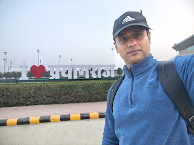

Sport · Life
Pratikultayah Shaktih: Strength through Adversity
Playing 75* off 50 balls with a fractured thumb — what a cricket match taught me about pain, purpose, and showing up for the team.

Spirit · Travel
Sarvasyapi Bhavedhetuh: Everything happens for a reason
Standing at the Triveni Sangam on Basant Panchami — a personal account of the most profound gathering on earth and what it felt like to dissolve into something much larger than oneself.

Fitness · Life
Tapasa Sarvamapnoti: Through discipline, one attains everything.
From barely lifting a bar to building real strength — a personal journey through grit, discipline, and why muscle matters more than ever after 40.